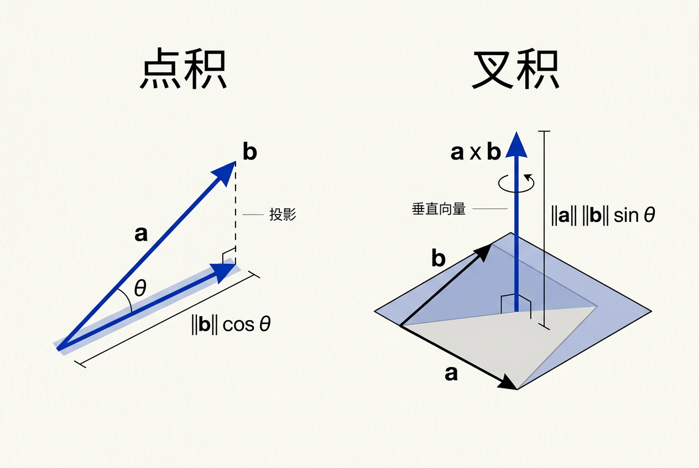
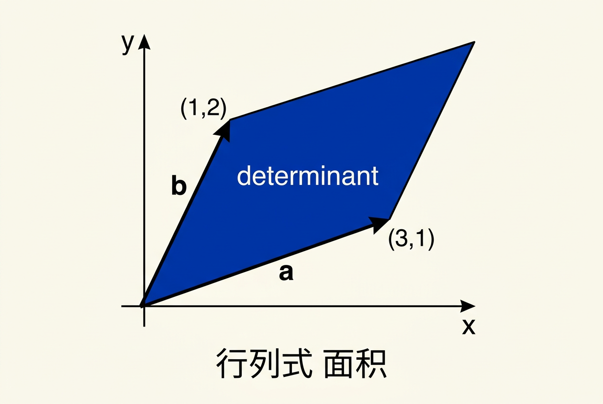
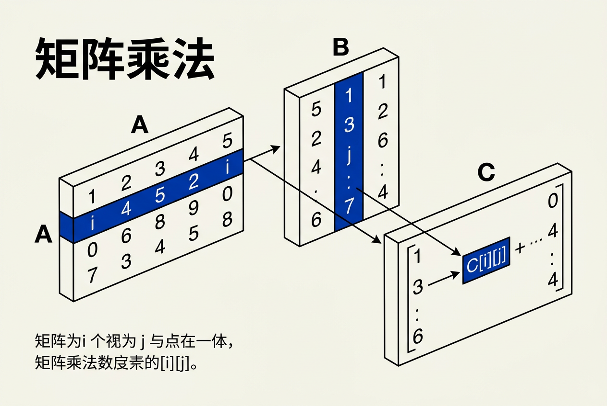
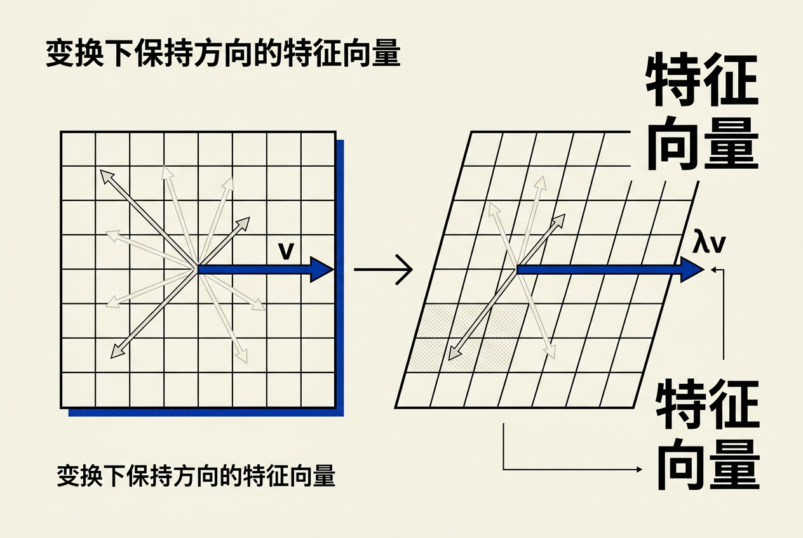
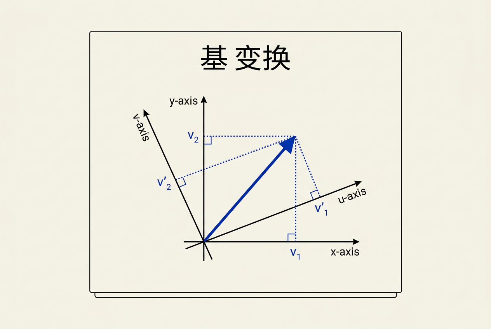

第6章：线性代数 — 零基础讲义
讲义说明
本讲义基于 Steve Marschner & Peter Shirley 所著《虎书5》第5版第6章（p.109-126）。
本章是计算机图形学的"数学骨架"——它告诉你为什么"变换一个物体"可以写成"乘一个矩阵"，为什么"体积缩放"等于"行列式"，为什么"特征向量"是"变换中方向不变的向量"。
本版插画采用 Guizang 材质插画风格重新绘制。
学习目标
- 理解行列式的几何含义——不是计算，是"面积/体积缩放倍数"
- 掌握矩阵运算的核心规则：乘法、转置、逆矩阵
- 理解正交矩阵在图形学中的特殊地位
- 理解特征值/特征向量的"不变方向"含义
- 掌握SVD——任意矩阵的"瑞士军刀"
- 学会用矩阵方法求解线性方程组
6.1 行列式（Determinants）
6.1.1 从面积到行列式——核心直觉
核心洞察：2×2矩阵的行列式绝对值 = 该矩阵把"单位面积的方形"变成"多大面积的平行四边形"。
让我们从视觉上理解这个最重要的概念：

对于一个2×2矩阵：
| det值 | 几何意义 | 举例 |
|---|---|---|
| det = 5 | 矩阵把单位面积"放大"了5倍 | 缩放矩阵 diag(5,1) → det=5 |
| det = 1 | 面积不变 | 旋转矩阵 → det = 1 |
| det = 0 | 把面积"压成0"——矩阵奇异（不可逆） | 投影矩阵 → det = 0 |
| det = -3 | 翻面 + 放大3倍（负号=镜像翻转） | 反射矩阵 → det = -1 |
6.1.2 3D行列式：体积缩放
3×3矩阵的行列式 = 平行六面体的有向体积，即三个列向量张成的三维形状的体积：
这个三阶行列式的展开式可以记忆为：a×第一行去掉a列后的2×2子行列式，符号交替。
图形学应用：det=0 → 矩阵不可逆 → 物体被压扁到平面 → 叫退化（degenerate）。在物理仿真中，det<0表示"翻转"（法线方向反了），通常是错误的。
// 图形学中常见的退化判断
bool is_degenerate = (fabs(matrix.determinant()) < 1e-6);6.1.3 行列式的三条核心性质
每条性质都有清晰的几何意义：
| 性质 | 公式 | 几何解释 |
|---|---|---|
| 1. 缩放 | |k·a · b| = k·|a · b| | 某边放大k倍 → 面积也放大k倍 |
| 2. 剪切不变面积 | |a+k·b · b| = |a · b| | 剪切变换不改变面积（只是歪了） |
| 3. 加法（分割） | |a · (b+c)| = |a·b| + |a·c| | 平行四边形可分割成两个面积之和 |

剪切只是"倾斜"了图形，但底和高的长度都没变——所以面积不变。在纹理映射中，这意味着我们可以对纹理做剪切变换而不改变纹理的"总可见量"，只改变形状。
6.2 矩阵（Matrices）
6.2.1 矩阵是什么？
矩阵 = 数字的二维数组 + 特定的算术规则
在图形学中，矩阵几乎都是实数方阵（行数=列数）：
| 矩阵大小 | 用途 | 例子 |
|---|---|---|
| 2×2 | 2D线性变换 | 旋转 cosθ, -sinθ; sinθ, cosθ |
| 3×3 | 3D线性变换（不含平移） | 3D旋转矩阵 |
| 4×4 | 3D仿射变换（含平移） | 模型-视图-投影矩阵 |
6.2.2 矩阵运算
矩阵乘法——图形学中最重要的运算：

关键约束：A的列数必须等于B的行数。即 (m×p)×(p×n) = (m×n)。中间的p必须相等。
// 2×2矩阵乘法例子
A = [1 2] B = [5 6] C = A × B = [1×5+2×7 1×6+2×8] = [19 22]
[3 4] [7 8] [3×5+4×7 3×6+4×8] [43 50]
// 验证右上角元素 C[0][1]：
// A的第0行 [1, 2] × B的第1列 [6, 8]^T = 1×6 + 2×8 = 22 ✓| 运算 | 公式 | 图形学含义 |
|---|---|---|
| 矩阵乘法 | C = A × B | AB = "先做A变换，再做B变换" |
| 矩阵加法 | [A] + [B] = [对应元素相加] | 不常用在变换中 |
| 标量乘法 | k·A = [每个元素×k] | 对变换整体缩放 |
6.2.3 转置（Transpose）
转置 = 把矩阵的行变成列
A = [1 2 3] Aᵀ = [1 4]
[4 5 6] [2 5]
[3 6]最重要的转置性质：
直观理解：因为"先做A再做B"，转置后变成"先做Bᵀ再做Aᵀ"——操作顺序正好反过来。这个性质在图形学中频繁使用。
6.2.4 逆矩阵（Inverse）
逆矩阵 = 矩阵的"倒数"
A的逆矩阵A⁻¹满足：
单位矩阵I：对角线为1，其余为0：
| 性质 | 公式 | 解释 |
|---|---|---|
| 可逆条件 | det(A) ≠ 0 | 行列式为0时不可逆（退化） |
| 逆的逆 | (A⁻¹)⁻¹ = A | 两次求逆回到原位 |
| 乘积的逆 | (AB)⁻¹ = B⁻¹ × A⁻¹ | 顺序翻转！与转置相同 |
6.2.5 正交矩阵——图形学最重要的特殊矩阵
正交矩阵：满足 R × Rᵀ = I 的矩阵。
对于正交矩阵，有一个极其诱人的性质：
这意味着旋转矩阵的"撤销"超级快——不需要解方程组，直接取转置即可。
// 验证正交矩阵
// 求逆 = 求转置，这是旋转矩阵的"特权"
// 因为旋转是正交变换，不改变向量长度和夹角
R = [cosθ -sinθ]
[sinθ cosθ]
Rᵀ × R = [cosθ sinθ] [cosθ -sinθ] = [1 0] = I ✓
[-sinθ cosθ] [sinθ cosθ] [0 1]判断正交矩阵的三个条件：
- 所有列都是单位长度（每列向量长度为1）
- 所有列之间互相正交（任意两列点积为0）
- 行列式为 +1 或 -1（+1=纯旋转，-1=含反射）
6.3 用矩阵计算
6.3.1 向量操作：行向量 vs 列向量
在图形学中，向量通常是列向量。矩阵乘以列向量得到新列向量：
这叫后乘（post-multiplication）——矩阵在左，向量在右。
// 列向量后乘（现代OpenGL/Vulkan标准）
v' = M × v
// 行向量前乘（早期DirectX/旧API）
v' = v × M
// 两种方式数学上等价，但代码完全不同！
// 现在的标准是列向量+后乘6.3.2 点积和叉积的矩阵形式
点积的矩阵形式：
将a转置为行向量，乘以b（列向量），结果就是标量。
叉积的矩阵形式（反对称矩阵）：
其中 [a]× 是反对称矩阵：
[a]× = [ 0 -az ay]
[ az 0 -ax]
[ -ay ax 0 ]这个形式在后面第7章的Rodrigues旋转公式中非常有用。
6.4 特征值与特征向量
6.4.1 直观理解——不变的方向
特征向量：被矩阵变换后方向不变的非零向量。
特征值：变换后被缩放的比例。
这个公式的意思是：矩阵A作用在特征向量v上，结果就是v本身乘以λ——方向不变，只改变长度。

生活类比：想象你拿着一张地图（2D平面），用放大镜（矩阵）去照它。在大多数方向上的线会改变方向——但总有一些特殊方向上的线只是变长了或变短了，方向不变。这些特殊方向就是特征向量方向，变长/变短的倍数就是特征值。
6.4.2 如何求特征值
求特征值就是解下面这个方程：
展开后是一个关于λ的多项式方程：
对2×2矩阵：
|a₁₁-λ a₁₂ | = (a₁₁-λ)(a₂₂-λ) - a₁₂a₂₁ = 0
|a₂₁ a₂₂-λ|
展开：λ² - (a₁₁ + a₂₂)λ + (a₁₁a₂₂ - a₁₂a₂₁) = 0
← λ² 项 ← 一次项 ← 常数项 = det(A)| 矩阵大小 | 特征值方程次数 | 求解方法 |
|---|---|---|
| 2×2 | 二次方程 | 求根公式（解析解） |
| 3×3 | 三次方程 | 可能解析解，但复杂 |
| 4×4+ | 高次方程 | 必须用数值方法（QR分解、Power Iteration） |
图形学警示：解析求特征值只对2×2和3×3实用。更大的矩阵请用迭代数值方法。
6.4.3 对称矩阵的特殊性质
对称矩阵：A = Aᵀ。在图形学中非常多见（例如物理仿真中的刚度矩阵、惯性张量）。
关键定理：实对称矩阵的特征值一定为实数，且对应的特征向量互相正交。
这个性质使得对称矩阵可以对角化：
其中 Q 是正交矩阵（列向量是A的特征向量），D是对角矩阵（对角元素是A的特征值）。
几何意义：对称矩阵的变换 = "旋转到特征向量方向 → 按特征值缩放 → 反向旋转回去"。这是理解SVD的铺垫。
旋转矩阵（非对称）在2D中没有实数特征向量（因为所有向量都在旋转，方向都变了）——特征值为复数。缩放矩阵的特征向量就是坐标轴方向，特征值就是各轴的缩放倍数。剪切矩阵有一个特征向量（剪切方向），对应特征值为1。
6.5 奇异值分解（SVD）
6.5.1 为什么需要SVD
问题：不是所有矩阵都能对角化！非对称矩阵的特征值可能是复数（比如旋转矩阵）。当特征值是复数时，它失去了"缩放倍数"的直观几何意义。
解决方案：SVD（奇异值分解）——对任何矩阵都有效，且奇异值一定是实数。
6.5.2 SVD的数学定义
任意 m×n 矩阵 A 都可以分解为：
| 符号 | 大小 | 含义 |
|---|---|---|
| U | m×m | 左奇异向量组成的正交矩阵 |
| Σ | m×n | 对角矩阵，对角元素为奇异值（非负实数，降序排列） |
| V | n×n | 右奇异向量组成的正交矩阵 |
6.5.3 SVD的几何含义
SVD告诉你：任何线性变换 = "旋转 → 按奇异值缩放 → 旋转回去"。
输入向量 v U×Vᵀ 缩放 A = U×Σ×Vᵀ
v ────→ Vᵀv ────→ ΣVᵀv ────→ U×Σ×Vᵀ×v
旋转 按σ缩放 旋转三个动作的物理意义：
- Vᵀ：把v旋转到"主轴"坐标系
- Σ：按奇异值σ₁, σ₂, ..., σᵣ分别缩放（σ₁是主要缩放）
- U：从"主轴"坐标系转回原始坐标系
6.5.4 SVD在图形学中的应用
| 应用 | 原理 | 效果 |
|---|---|---|
| 数据降维（PCA） | 保留最大的k个奇异值，丢弃小值 | 用1%的数据保留95%的信息 |
| 图像压缩 | 对图像块做SVD，只保留前几个奇异值 | 极低存储下的近似重建 |
| 最小二乘求解 | x = V × Σ⁻¹ × Uᵀ × b | 数值稳定的伪逆求解 |
| 条件数判断 | 条件数 = σ_max / σ_min | 数值稳定性衡量 |
SVD是图形学工具箱中的"瑞士军刀"——遇到任何"分解矩阵"的问题，先想SVD。
6.6 Cramer法则
6.6.1 用行列式解方程组
Cramer法则 = 用行列式解线性方程组。对于2个方程2个未知数：
对于方程组：
a₁x + b₁y = c₁
a₂x + b₂y = c₂
|c₁ b₁| |a₁ c₁|
x = ───────── y = ─────────
|a₁ b₁| |a₁ b₁|
|a₂ b₂| |a₂ b₂|几何解释：|A|是三个列向量张成的n维体积。|A_x|是把x系数列替换为b后的"新体积"。x = 新体积/原体积。
6.6.2 3D例子
3个平面（3个三元一次方程）求交点：
3x + 7y + 2z = 4
2x - 4y - 3z = -1
5x + 2y + z = 1
|4 7 2| |3 4 2| |3 7 4|
x = ───────── y = ───────── z = ─────────
|3 7 2| |3 7 2| |3 7 2|
|2 -4 -3| |2 -4 -3| |2 -4 -3|
|5 2 1| |5 2 1| |5 2 1|图形学中Cramer法则在光线-三角形求交（Möller-Trumbore算法）中有直接应用——用Cramer法则求解3个未知数t, β, γ。
6.7 矩阵与图形变换
6.7.1 用矩阵表示变换

每一种"线性变换"都对应一个矩阵：
| 变换 | 2D矩阵 | 3D矩阵（线性部分） |
|---|---|---|
| 缩放 | [sx 0; 0 sy] | diag(sx, sy, sz) |
| 旋转 | [cosθ -sinθ; sinθ cosθ] | 绕x/y/z轴的3个旋转矩阵 |
| 剪切 | [1 k; 0 1] | 多种（xy, xz, yz平面） |
| 反射 | [-1 0; 0 1] | 对特定平面的反射 |
6.7.2 矩阵乘法的"魔法"
矩阵乘法对应变换的复合：
意思是："先做T₁，再做T₂，再做T₃"（从右到左读）。
图形学应用：场景中一个物体的最终位置 = 模型矩阵 × 视图矩阵 × 投影矩阵。
6.7.3 旋转矩阵的特殊性
任何3D旋转矩阵R都满足：
- R是正交矩阵（R⁻¹ = Rᵀ）
- det(R) = +1（不包含反射——区别于反射矩阵的det=-1）
- 9个参数中只有3个独立（绕x, y, z的旋转角）
反直觉事实：3D旋转只有3个自由度，但旋转矩阵有9个数字！这就是为什么四元数（只有4个数字+1个约束=3个自由度）能成为更紧凑的旋转表示。
6.8 数值稳定性
6.8.1 为什么图形学很关心数值问题
- 大量浮点运算：累积误差会消耗精度
- 病态矩阵：接近奇异的矩阵让结果爆炸
- 实时要求：不能等"无限精度"计算
6.8.2 实用建议
1. 避免直接求逆：
// ❌ 不推荐：多次求逆
M_combined = M_a.inverse() * M_b.inverse();
// ✅ 推荐：先合成再求逆
M_combined = M_b * M_a;
M_combined_inverse = (M_b * M_a).inverse();2. 优先使用正交矩阵的性质：
// ❌ 慢：解线性方程组求逆再乘
result = M_inverse * v;
// ✅ 快：因为M是正交矩阵，M⁻¹ = Mᵀ
result = M.transpose() * v;3. 用SVD处理病态问题：
// 对接近奇异的矩阵，SVD给出"最稳定"的解
U, Σ, Vt = svd(A);
// 伪逆 = V × Σ⁺ × Uᵀ，其中Σ⁺的小奇异值置0
A_pseudoinverse = V * diag_pinv(Σ) * U.transpose();全章总结
核心洞察：线性代数是计算机图形学的"母语"——
- 行列式 告诉你变换的缩放比例（和奇异性）
- 矩阵乘法 让你可以"叠加"多个变换
- 正交矩阵 让"撤销变换"变得极快（逆=转置）
- 特征向量 告诉你变换的"不变方向"
- SVD 告诉你"任何变换=旋转×缩放×旋转"
最重要的不是公式，而是几何直觉——每个矩阵运算背后都有一个空间形状的变换。掌握了几何，你就"看穿"了公式。
| 概念 | 核心公式 | 图形学意义 |
|---|---|---|
| 逆矩阵 | A × A⁻¹ = I | 撤销变换 |
| 转置 | (AB)ᵀ = Bᵀ × Aᵀ | 变换顺序翻转 |
| 乘积的逆 | (AB)⁻¹ = B⁻¹ × A⁻¹ | 复合变换的逆 |
| 正交矩阵 | R × Rᵀ = I → R⁻¹ = Rᵀ | 旋转矩阵极速求逆 |
| 特征值 | A × v = λ × v | 不变方向与缩放 |
| 对角化 | A = Q × D × Qᵀ | 对称矩阵分解（对称矩阵专属） |
| SVD | A = U × Σ × Vᵀ | 任何矩阵的通用分解 |
| Cramer法则 | x = |A_x| / |A| | 行列式法求线性方程组 |
一句话总结：行列式=面积/体积缩放倍数，矩阵乘法=变换复合，正交矩阵=逆=转置的超方便性质，特征向量=变换中不改变方向的向量，SVD=任意矩阵都能分解为旋转×缩放×旋转。